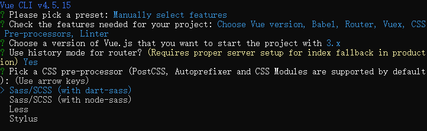
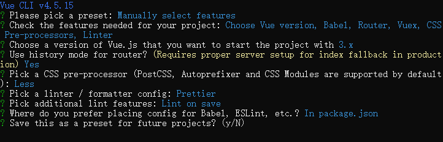

从零开始搭建vue-cli项目
1、安装vue cli
搭建vue3项目必须是用vue cli3以上的版本，如果当前存在1.x
或者2.x版本，需要先卸载。然后安装最新版的，同时需要node
版本大于8.9（官方推荐8.11.0+） 1
2
3
4node -v // 查看nodejs版本
vue -V // @vue/cli 4.5.15 查看vue cli版本 必须使用3以上
npm uninstall vue-vli -g // 卸载旧版本的vue-cli
npm install -g @vue/cli // 安装新版本
2、创建项目
vue create hello-world新建项目，项目名不支持驼峰，只能使用下划线或中划线提示有两种预设配置，选择后直接开始创建项目
自定义配置
第三个为自选设置，可以根据项目需要选择
- Babel：把JavaScript中高版本的es规范转化为es5，让低端运行环境能够识别并执行。
- TypeScript: 是否支持typescript源码书写
- Progressive Web App (PWA) Support：支持渐进式网页
- Router：支持vue-router
- Vuex：支持Vuex
- CSS Pre-processors ：css预处理解释器，根据需求选择，可选scss、less，stylus
- linter / formatter：代码风格和格式化
- Unit Testing：支持单元测试
- E2E Testing：支持E2E测试
选择设置之后开始配置
选择vue版本
路由模式选择，默认使用history模式
css解释器

代码风格和格式化，针对vscode需要选择prettier
什么时候语法检查生效，第一个保存就检查，第二个是fix和commit是检查
配置文件存放位置，第一个是单独文件夹，第二个是package.json文件里
是否保存当前设置为预设

选择之后即可创建项目。
新建的项目目录层级如下：
1
2
3
4
5
6
7
8
9
10
11
12
13
14
15
16
17
18
19
20
21
22
23
24
25│ .gitignore
│ babel.config.js
│ package-lock.json
│ package.json
│ README.md
├─node_modules
│
├─public
│ favicon.ico
│ index.html
│
└─src
│ App.vue
│ main.js
├─assets
│ logo.png
├─components
│ HelloWorld.vue
├─router
│ index.js
├─store
│ index.js
└─views
About.vue
Home.vue各文件解释：
node_modules （node的包）
public 静态文件，打包的时候会原封不动的提交
src 项目编写文件夹
.gitignore （git忽略内容）
babel.config.js （对babel的配置）
package.json, package-lock.json
package-lock.json缓存性文件
其他额外配置文件解释
.browserslistrc （配置浏览器相关东西，和vuecli2的babelrc一样，市场份额大于1%，最新的两个版本，不支持小于ie8）
.editorconfig 帮助开发人员在不同的编辑器和IDE之间定义和维护一致的编码样式。—待完善
vue.config.js cli全局配置，与package.json同级是会被自动加载。
.eslintignore 忽略eslint校验，文件内容就是需要忽略的文件名，可以支持*星号包含全部。
.eslintrc.js eslint常用配置，详情见下文。
.prettierrc 配置右键格式优化时自动补全符号
webpack.dll.conf.js 打包优化
jsconfig.json
配置@提示，代表src文件夹，文件过多时查找方便
1
2
3
4
5
6
7
8
9{
"compilerOptions": {
"baseUrl": "./",
"paths": {
"@/*": ["src/*"]
}
},
"exclude": ["node_modules", "dist"]
}
webpack打包，代理